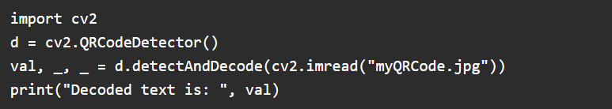

QR code stands for Quick Response Code. QR codes may look simple but they are capable of storing lots of data. Irrespective of how much data they contain when scanned QR code allows the user to access information instantly. That is why they are called Quick Response Code.
These are being used in many scenarios these days. It first appeared in Japan in 1994. QR codes can be used to store(encode) lots of data and that too of various types. For example, they can be used to encode:
Contact details
1)Facebook ids, Instagram ids, Twitter ids, WhatsApp ids, and more.
2)Event Details
3)Youtube links
4)Product details
5)Link directly to download an app on the Apple App Store or Google Play.
6)They are also being used in doing digital transactions by simply scanning QR codes.
7)Access Wi-Fi by storing encryption details such as SSID, password, and encryption type.
This list goes on….!
We just saw some advantages of QR codes. Now we will learn here how we can generate QR codes in Python. For QR code generation using python, we are going to use a python module called QRcode.
Step 1:Install it using this command: pip install qrcode
We will generate a QR Code for encoding the youtube link and we will also explore more. QR code generation is simple. Just pass the text, link, or any content to ‘make’ function of QRcode module.
On executing this code output is:
You can scan it and verify.
You can see it’s just 3 lines of code to generate this QR Code. One more thing to mention is that it’s not necessary that you always have to give a link to qrcode.make() function. You can provide simple text also.
For example:
You can encode: India is a country with many religions. I love India.
Let’s try it out:
Output QR Code for this text is:
Scan it from your mobile and you will get the content.
this is the one part, which involves generating a QR Code and scanning it. But what if we want to read this QR Code i.e., now we want to know what was encoded in the QR Code without scanning it. For this, we will use OpenCV. OpenCV is a library of programming functions focused on real-time computer vision tasks.
Install opencv: pip install opencv-python
Code to decode a QR code back to know the original string.
Output:
This QRcode module in python provides many other functionalities.
Go and try out yourself
It'll be fun and amazing